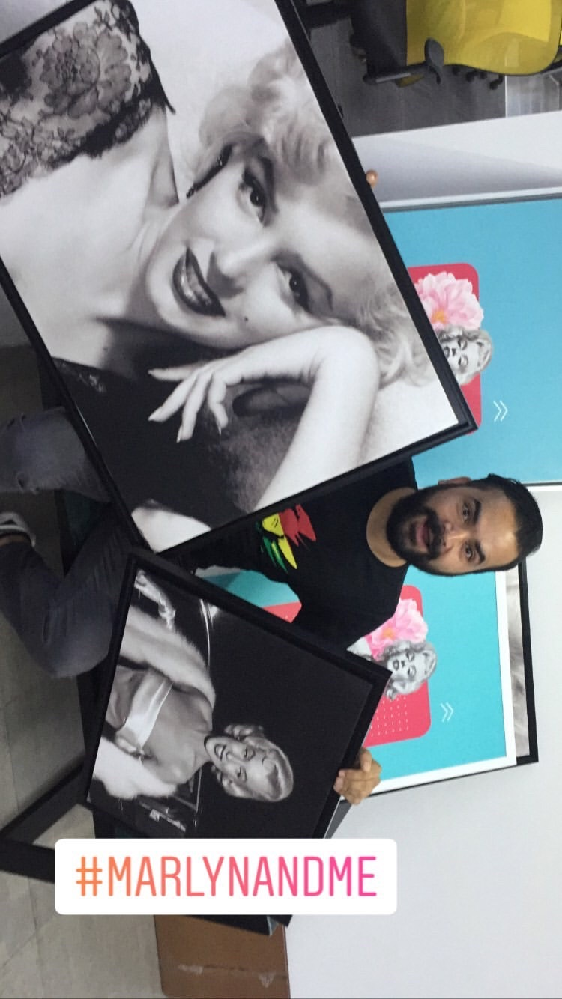

01 · Early Practice
Learning what moves people
Before I wrote my first line of corporate narrative or architected multi-market campaigns, I was trying to understand why people gather in rooms.
At sixteen, my friends and I pooled our trip money, and I borrowed from my father to open a video games parlour. It failed commercially, yet it catalyzed a gaming and hangout culture that endures to this day in our small town of 100,000 people. I wanted my hands on every medium to explore what brings communities together.
